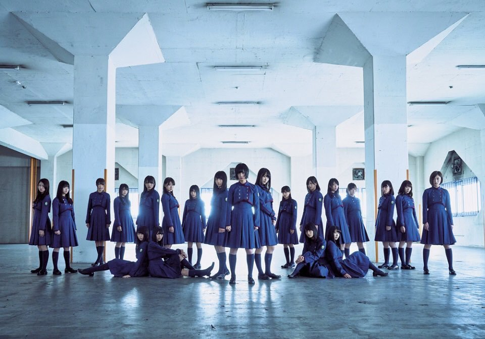
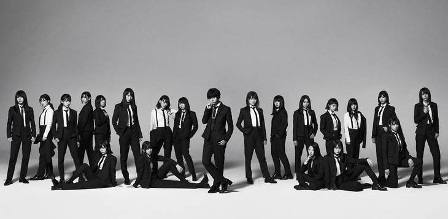

Keyakizaka 46
About keyakizaka46
Keyakizaka46 (欅坂46, Keyakizaka Forty-six) is a Japanese girl idol group, produced by Yasushi Akimoto. It was created on August 21, 2015. It is Nogizaka46's first sister group.


Keyakizaka46 has a total of 43 original members. As of September 2017, Kanji Keyakizaka46 has 21 members and Hiragana Keyakizaka46 has 20 members.
Members' highlight
Center of Keyakizaka46
Hirate Yurina
Native name
平手 友梨奈
Born
25 June 2001 (age 16)
Origin
Aichi Prefecture, Japan